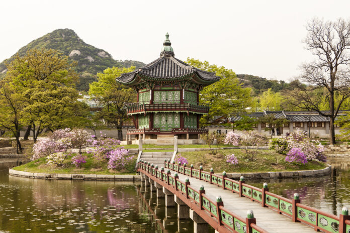
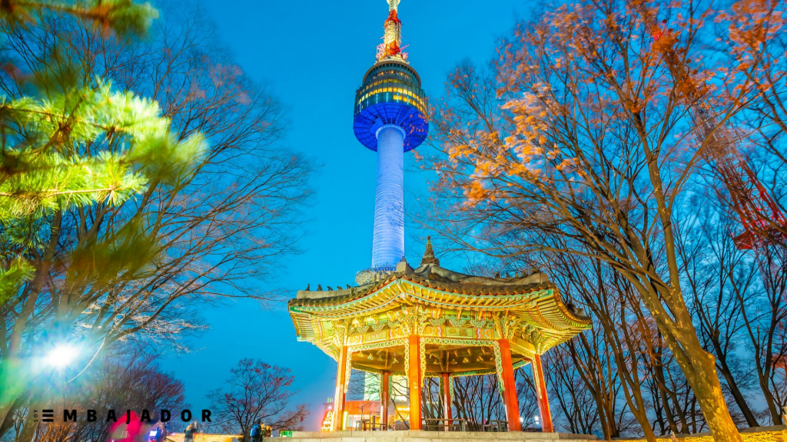
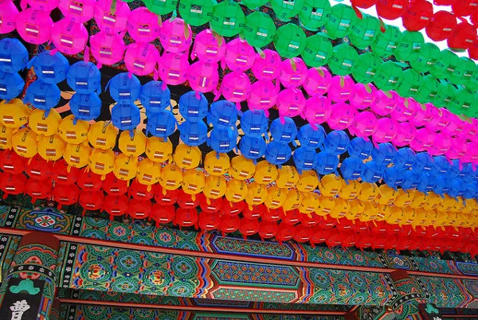
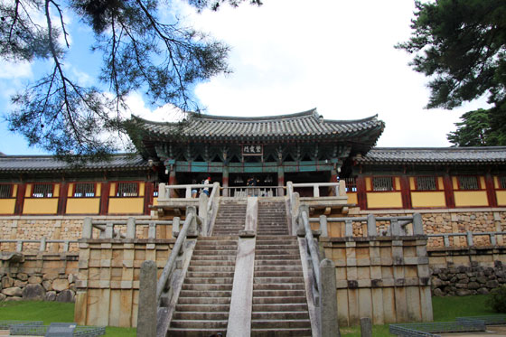

1. El Gyeongbokgung

Gyeongbokgung es un hermoso y muy importante palacio ubicado en la ciudad de Seúl, se trata de uno de los Cinco Palacios de Seúl. Destaca por su hermosísima arquitectura y sus más de 600 años de historia. Su edificación fue iniciativa de Lee Seong-Gye, en el año 1395.
Visitarlo es una experiencia increíble e imperdible, por lo que no puedes dejarla pasar. Presenciar el cambio de guardia es algo maravilloso que sin duda no olvidarás. Al recorrerlo sentirás que has viajado cientos de años atrás. Esto lo convierte sin duda en uno de los más increíbles lugares de Corea del Sur.
2. N Seoul Tower de Seúl

La N Seoul Tower es uno de los iconos más reconocibles de Seúl, pese a que no es demasiado bonita. A nosotros nos recuerda a Torrespaña, el célebre Pirulí de Madrid. Esta semblanza no es muy descabellada ya que las dos torres son coetáneas y tienen más o menos la misma altura aunque las separan más de 10.000 kilómetros. A pesar de que la torre sólo tiene 236,7 metros de altitud, al estar situada en la cima del monte Nansam (243 metros) la convierte en un mirador extraordinariamente privilegiado. Sumando la altura de la N Seoul Tower y la de la montaña se alcanzan los 480 metros, de ahí que las vistas panorámicas de Seúl sean tan magníficas.
3. Templo Jogyesa de Seúl

Jogyesa no es de los templos más bellos, pero sí de los más populares del país. En nuestra opinión influyen dos factores fundamentales. El primero es la ubicación, ya que está emplazado cerca de algunos de los atractivos turísticos más importantes de Seúl entre los que se encuentran la bulliciosa Insa-dong, el palacio Gyeongbokgung o el Museo Nacional de Corea. El segundo motivo no es tan turístico, pero sí muy importante para los fieles ya que se trata del núcleo del budismo Zen en Corea y su altar es uno de los más sagrados para los budistas coreanos.
4. Templo Bulguksa de Gyeongju

Bulguksa es tan descomunal que nunca tienes las sensación de estar hacinado. Al contrario de lo que sucede con nuestras iglesias, un templo de este estilo suele estar compuesto por muchísimos edificios distintos, murallas, escaleras que suben y bajan y pagodas. No hace falta ser ningún experto en arquitectura coreana o un ferviente budista para disfrutar de este rincón enclavado en la montaña. El colorido de su ornamentación, la vegetación que lo rodea, la belleza de los edificios y jardines o los cantos de los monjes te mantendrán en constante alerta.
5. Estanque Anapji de Gyeongju
El Estanque Anapji de Gyeongju consiste en un hermoso complejo que formaba parte de la fortaleza real de Wolseung, construido hace más de 13 siglos por orden del rey Munmu con unos resultados más que admirables. No sabemos que aspecto tendría este rincón de Gyeongju hace cientos de años, pero en la actualidad es un verdadero remanso de paz y un lugar que invita a la relajación y a la vida contemplativa. La cantidad de turistas no es abrumadora, así que es fácil encontrar algún escondite para gozar de un momento zen.